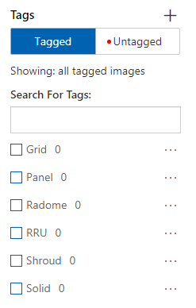
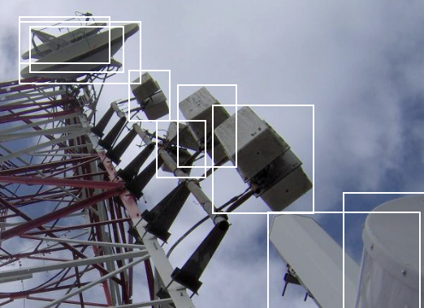
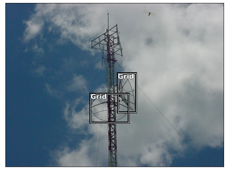
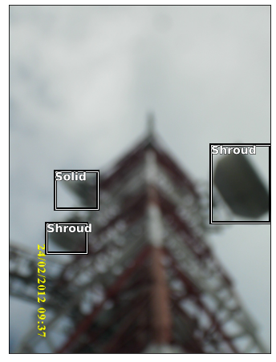
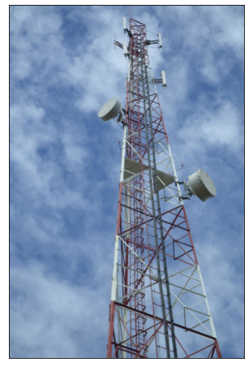
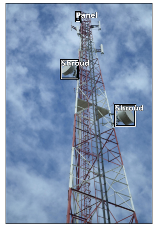
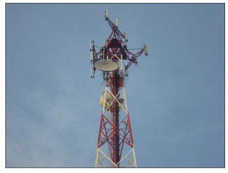
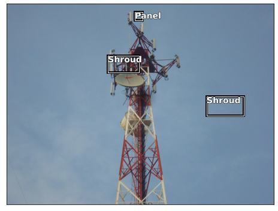
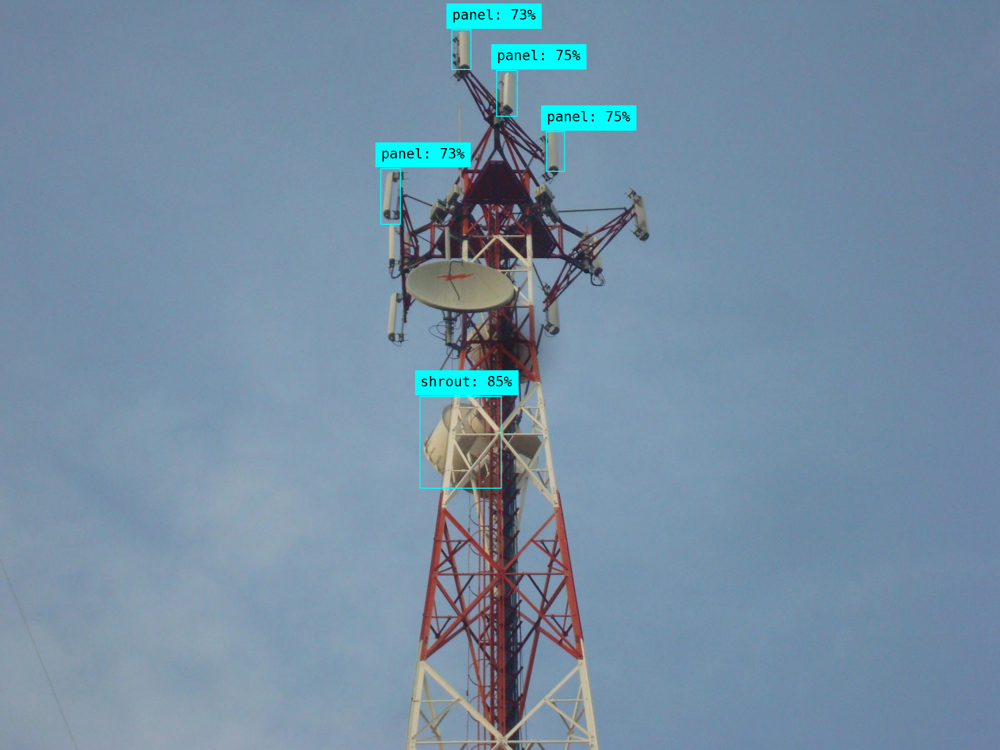

from azure.cognitiveservices.vision.customvision.training import CustomVisionTrainingClient
from azure.cognitiveservices.vision.customvision.training.models import ImageFileCreateBatch, ImageFileCreateEntry, Region, ImageRegionCreateEntry
from msrest.authentication import ApiKeyCredentials
import time
import json
import os
import pandas as pd
import numpy as np
from dotenv import load_dotenv
from pathlib import Path
from PIL import Image, ImageOps
from PIL import UnidentifiedImageError
import matplotlib.pyplot as plt
from matplotlib import patches, patheffectsPart 2. Label images with Smart Labeler

Introduction
In this series of posts we are going to follow along the process and code required to train an object detection model using Azure Custom Vision (in its free tier).
-> We are going to use real world pictures compiled from work I have done over the years in Venezuela. In this kind of supervised learning problem we need tagged images. So we will use Smart Labeler to do that.
After the model is published in Azure service, we can use the API to build and share a demo with Gradio and Huggingface.
Here is the one that is already published for you to try:
Telecom-Object-Detection
The model will be trained to detect the following objects:
- Grid Antenna
- Panel antenna
- Radome antenna
- RRU
- Shroud antenna
- Solid antenna

|

|

|
| Grid | Panel | Radome |

|

|

|
| RRU | Shroud | Solid |
Tutorial Parts
- Part 1 covered:
- Creating a free Azure Custom Vision Service.
- Uploading the images to the service.
- Part 2:
- Analyzing what happens to the images after uploading.
- How to label the images using Smart Labeler
- Training and testing the model.
- Part 3 will cover:
- Create a Huggingface Gradio Demo.
References
- Custom Vision Documentation: Label images faster with Smart Labeler
- Microsoft Learn Excersice: Detect Objects in Images with Custom Vision
- Custom Vision Documentation: Quickstart: Create an object detection project with the Custom Vision client library
- REST API Endpoint: Custom Vision REST API reference - Azure Cognitive Services
- APIs Documentation: Custom_Vision_Training_3.3
- Azure SDK for Python: Custom Vision Client Library
- Source Code: Azure/azure-sdk-for-python
Part 2.1. Labeling the Images
Smart Labeler is a simple tool for labeling images. It can be used for classification and object detection problems. When working in this problem I missed the ability to zoom-in when labeling some small objects, but as I said, this is a straightforward tool.
For speeding up bigger projects it might be usefull that you can first label some pictures, then train and get suggestions for the untagged images, but I didn’t use it. By default the labeler tries to give suggestions even without that first training.
The process is simple and you can the use the annotation to train models outside the service (as we are going to try after this series, hopefully, using fastai).
Install and import libraries
We need to install Custom Vision’s Python SDK and python-dotenv:
! pip install azure-cognitiveservices-vision-customvision==3.1.0
! pip install python-dotenv
Credentials and services
DOTENV_PATH = './.env'load_dotenv(DOTENV_PATH)
training_endpoint = os.getenv('TrainingEndpoint')
training_key = os.getenv('TrainingKey')
project_id = os.getenv('ProjectID')
credentials = ApiKeyCredentials(in_headers={"Training-key": training_key})
training_client = CustomVisionTrainingClient(training_endpoint, credentials)
custom_vision_project = training_client.get_project(project_id)Creating Labels
Since I already did the manual tagging, we can use those tags in this new project.
First we need to create the labels/tags in the service: - CustomVisionTrainingClient.create_tag()
tags = ['Grid', 'Panel', 'Radome', 'RRU', 'Shroud', 'Solid']
desc = ['Grid Antenna', 'Panel Cel. Antenna', 'Radome Antenna',
'RRU Equipment', 'Shroud Antenna', 'Solid Antenna']service_tags = []
for i, tag in enumerate(tags):
service_tags.append(
training_client.create_tag(
project_id=project_id, name=tag,
description=desc[i]
)
)
service_tags[<azure.cognitiveservices.vision.customvision.training.models._models_py3.Tag>,
<azure.cognitiveservices.vision.customvision.training.models._models_py3.Tag>,
<azure.cognitiveservices.vision.customvision.training.models._models_py3.Tag>,
<azure.cognitiveservices.vision.customvision.training.models._models_py3.Tag>,
<azure.cognitiveservices.vision.customvision.training.models._models_py3.Tag>,
<azure.cognitiveservices.vision.customvision.training.models._models_py3.Tag>]Now we can see this in the service:

service_tags = training_client.get_tags(project_id=project_id)service_tag_ids = {tag.name: tag.id for tag in service_tags}
service_tag_ids{'RRU': '91ffb5b0-fe25-4d72-9c65-14793183a3b9',
'Shroud': '4e413c15-141a-419b-a958-1485008b2904',
'Solid': '3f13d9b0-7b4d-4679-8fb8-7855cea0a118',
'Radome': 'a1020654-79c5-4d8a-867c-93dfb2a4a81d',
'Grid': 'e016b6a4-49e6-4897-a0c7-d8fc64d032f1',
'Panel': 'c9b15b62-6823-44a4-8fee-fa9d84e65a7e'}Upload Regions from json file
As I pointed before, you can create all the regions with Smart Labeler. Since I did that already in a previos project, I updated the region’s image ids and tags to the ones in this project and save them as a json.
We can see from the documentation that “There is a limit of 64 entries in a batch.”
with open("20221016_CreateImageRegions_Body.json") as json_file:
regions_dict = json.load(json_file)
print(f'We have a total of {len(regions_dict["regions"]):_} regions.')
print()
print('The first two regions:')
regions_dict['regions'][:2]We have a total of 1_279 regions.
The first two regions:[{'imageId': '6e274dfc-411a-4bf3-9151-51b96f662248',
'tagId': '91ffb5b0-fe25-4d72-9c65-14793183a3b9',
'left': 0.6395582,
'top': 0.0,
'width': 0.10740108,
'height': 0.14776269},
{'imageId': '6e274dfc-411a-4bf3-9151-51b96f662248',
'tagId': 'c9b15b62-6823-44a4-8fee-fa9d84e65a7e',
'left': 0.772766,
'top': 0.16059849,
'width': 0.22664931,
'height': 0.40633526}]# Create batches of 60 regions
regions = regions_dict['regions']
for i in range(int(1_279 / 60)+1):
batch_regions = []
print(f'Creating Regions {i*60+1:>{5}_} to {min((i+1)*60, 1_279):>{5}_}')
for region in regions[i*60: (i+1)*60]:
batch_regions.append(
ImageRegionCreateEntry(
image_id=region['imageId'],
tag_id=region['tagId'],
left=region['left'], top=region['top'],
width=region['width'], height=region['height']
))
training_client.create_image_regions(
project_id=project_id,
regions=batch_regions
)Creating Regions 1 to 60
Creating Regions 61 to 120
Creating Regions 121 to 180
Creating Regions 181 to 240
Creating Regions 241 to 300
Creating Regions 301 to 360
Creating Regions 361 to 420
Creating Regions 421 to 480
Creating Regions 481 to 540
Creating Regions 541 to 600
Creating Regions 601 to 660
Creating Regions 661 to 720
Creating Regions 721 to 780
Creating Regions 781 to 840
Creating Regions 841 to 900
Creating Regions 901 to 960
Creating Regions 961 to 1_020
Creating Regions 1_021 to 1_080
Creating Regions 1_081 to 1_140
Creating Regions 1_141 to 1_200
Creating Regions 1_201 to 1_260
Creating Regions 1_261 to 1_279Example image, capture from the service:

Verifying the number of created Regions
all_tagged_images = training_client.get_images(
project_id=project_id,
tagging_status="Tagged",
take=250 # Max 256
)
i = 0
for im in all_tagged_images: i += len(im.regions)
print(f"Number of created Regions: {i:_}")Number of created Regions: 1_279Draw some regions
images_df = pd.read_csv('20221015_203_Images_Uploaded_WxH.csv')
images_df.index = images_df.image_id
images_df.head(5)| image_name | image_id | image_status | ori_w | ori_h | train_w | train_h | |
|---|---|---|---|---|---|---|---|
| image_id | |||||||
| 452a0b58-0dc5-41ff-83d1-8d1ae7bd5d1c | 41.JPG | 452a0b58-0dc5-41ff-83d1-8d1ae7bd5d1c | OK | 640 | 480 | 640 | 480 |
| 96b7774e-f5ad-4591-aa71-99ad5c71135e | CIMG0030.JPG | 96b7774e-f5ad-4591-aa71-99ad5c71135e | OK | 1620 | 2160 | 900 | 1200 |
| 3027bc7e-6e21-4b13-a7d7-bb7e08ce6824 | CIMG0031.JPG | 3027bc7e-6e21-4b13-a7d7-bb7e08ce6824 | OK | 1620 | 2160 | 900 | 1200 |
| 1320ab2e-3405-4853-bd7e-b0ef0f915d4b | CIMG0056.JPG | 1320ab2e-3405-4853-bd7e-b0ef0f915d4b | OK | 2160 | 1620 | 1200 | 900 |
| aa67eceb-3db0-4026-bf16-0842c006e6ac | CIMG0059.JPG | aa67eceb-3db0-4026-bf16-0842c006e6ac | OK | 2160 | 1620 | 1200 | 900 |
Create a dictionary to easily access all regions from an image id:
img2ann = dict()
for image in all_tagged_images:
img2ann[image.id] = tuple([list(), list()])
image_w = image.width; image_h = image.height
ori_w = images_df.loc[image.id].ori_w
ori_h = images_df.loc[image.id].ori_h
for region in image.regions:
img2ann[image.id][1].append(region.tag_name)
img2ann[image.id][0].append([
region.left*ori_w,
region.top*ori_h,
region.width*ori_w,
region.height*ori_h
])pics_folder = Path('./train_images')# https://youtu.be/Z0ssNAbe81M?t=4636
def show_img(im, figsize=None, ax=None):
if not ax: fig, ax = plt.subplots(figsize=figsize)
ax.imshow(im)
ax.get_xaxis().set_visible(False)
ax.get_yaxis().set_visible(False)
return ax
def draw_outline(o, lw):
o.set_path_effects([patheffects.Stroke(
linewidth=lw, foreground='black'), patheffects.Normal()
])
def draw_rect(ax, b):
patch = ax.add_patch(
patches.Rectangle(b[:2], *b[-2:], fill=False, edgecolor='white', lw=1)
)
draw_outline(patch, 4)
def draw_text(ax, xy, txt, sz=14):
text = ax.text(*xy, txt,
verticalalignment='top', color='white', fontsize=sz, weight='bold')
draw_outline(text, 1)def draw_regions(index=0):
im = Image.open( pics_folder / images_df.iloc[index].image_name )
ax = show_img(im, figsize=(8,8))
reg, lab = img2ann[images_df.iloc[index].image_id]
for idx, region in enumerate(reg):
draw_rect(ax, np.array(region))
tag = lab[idx]
draw_text(ax, region[:2], tag)draw_regions(index=0)[[329.19859199999996, 205.3586496, 53.42696959999999, 114.2365248], [249.3986112, 264.75866399999995, 112.4269696, 85.23652799999999]]
A dragon-fly was cought in that picture!
draw_regions(index=100)
Part 2.2. Train and Test a Model
Train the model
train_iteration = training_client.train_project(
project_id=project_id,
training_type='Regular'
)train_iteration.as_dict(){'id': 'd0006e20-33dd-4806-9fe9-cfc3fca82552',
'name': 'Iteration 1',
'status': 'Training',
'created': '2022-10-12T13:34:38.120Z',
'last_modified': '2022-10-22T14:56:30.406Z',
'project_id': 'f6cb4ba7-5bbe-46a4-8836-69654dc86f3a',
'exportable': False,
'training_type': 'Regular',
'reserved_budget_in_hours': 0,
'training_time_in_minutes': 0}performance = training_client.get_iteration_performance(
project_id=project_id,
iteration_id=train_iteration.id
).as_dict()
for tag in performance['per_tag_performance']:
print('/'*20)
print('tag:', tag['name'])
print('image count:', training_client.get_tag(
project_id=project_id, tag_id=service_tags[tag['name']]
).image_count)
print('recall:', tag['recall'])
print('average_precision:', tag['average_precision'])////////////////////
tag: Shroud
image count: 140
recall: 0.35789475
average_precision: 0.7280897
////////////////////
tag: Panel
image count: 68
recall: 0.11392405
average_precision: 0.3710658
////////////////////
tag: Solid
image count: 88
recall: 0.21428572
average_precision: 0.4641156
////////////////////
tag: Grid
image count: 80
recall: 0.10526316
average_precision: 0.3784035
////////////////////
tag: Radome
image count: 20
recall: 0.0
average_precision: 0.051538005
////////////////////
tag: RRU
image count: 32
recall: 0.13043478
average_precision: 0.48053658Some things that I would take into account now that negatively impact the model performance: - I choose many images with small boxes. - Some tags are not represented equally, so we ended an unbalanced distribution. - And of course lets remember we only did a quick train.
This is a very good thread on some tips and tricks to improve object detection:
😨 Training an Object Detection Model is a very challenging task and involves tweaking so many knobs
— AI Fast Track (@ai_fast_track) October 20, 2022
Here is an exhaustive 🎁 tips & tricks list 🎁 that you could use to boost your model performance
🧵 pic.twitter.com/sOvEUhCCwg
Test the model (Quick Test)
Quick test allows to test the model without publishing a prediction API.
# Load image and get height, width and channels
image_file = Path("./test_images/las-palmas-at-60-(20).jpg")
image = Image.open(image_file)
h, w, ch = np.array(image).shape
show_img(image, figsize=(8,8));
# Detect objects in the test image
print('Detecting objects in', image_file)
with open(image_file, mode="rb") as image_data:
results = training_client.quick_test_image(
project_id=project_id,
image_data=image_data,
iteration_id=train_iteration.id
)Detecting objects in test_images/las-palmas-at-60-(20).jpgdef get_reg_lab(results):
reg = []; lab = []
for prediction in results.predictions:
# Only show objects with a > 50% probability
if (prediction.probability*100) > 50:
left = prediction.bounding_box.left * w
top = prediction.bounding_box.top * h
height = prediction.bounding_box.height * h
width = prediction.bounding_box.width * w
reg.append([left, top, width, height])
lab.append(prediction.tag_name)
return reg, labdef draw_regions(image):
ax = show_img(image, figsize=(8,8))
reg, lab = get_reg_lab(results)
for idx, region in enumerate(reg):
draw_rect(ax, np.array(region))
tag = lab[idx]
draw_text(ax, region[:2], tag)draw_regions(image)
As you can see, it didn’t detect some antennas. But taking into account we did a regular training and the limitations mentioned in the training data, it is impressive that it got some right in such a complex problem as object detection.
image_file = Path("./test_images/DSC09399.jpg")
image = Image.open(image_file)
h, w, ch = np.array(image).shape
show_img(image, figsize=(8,8));
draw_regions(image)
Not a good job in this one. But this result is with a “regular” training (quick).
You can see in the Gradio demo Telecom Object Detection with Azure Custom Vision that the model trained for 1 hour (free tier limit) does a better job with this picture.

Conslusions
- Object detection is a complex problem. The fact that the service does a reasonable good job with unbalanced training photos and with such a limited training time talks about the great margin for improvement.